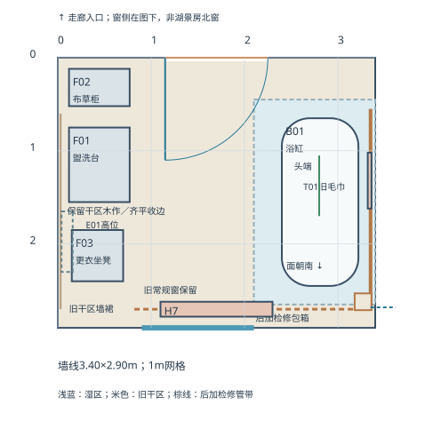
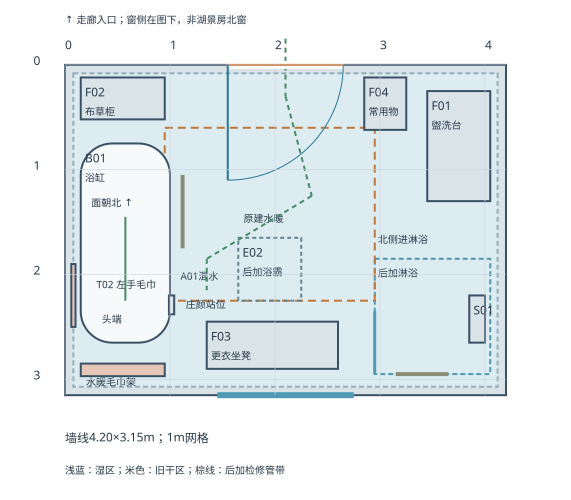

罗辑浴室布局俯视图

主卧旧浴室：普通房间逐步改成洗浴；保留使用能力及历史痕迹，不再绑定42-L镜头。
v2：主卧旧浴室保留原改造痕迹；罗辑试过空置老人房浴室后固定在西翼洗浴，42-L洗浴与左手毛巾动作落右图。原家主仍习惯主卧旧浴室。

主卧旧浴室：普通房间逐步改成洗浴；保留使用能力及历史痕迹，不再绑定42-L镜头。

西翼浴室：1890年代原生洗浴工程→后加淋浴与暖季补热→罗辑后期常用；42-L左手毛巾见西墙。
初始房间具体名称、设备型号与施工构造待定；正文不改，历史痕迹不以牺牲防水、排水和使用条件实现。